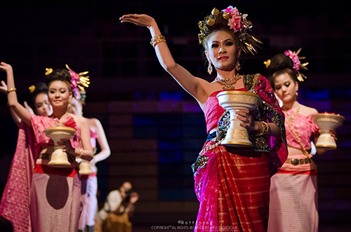
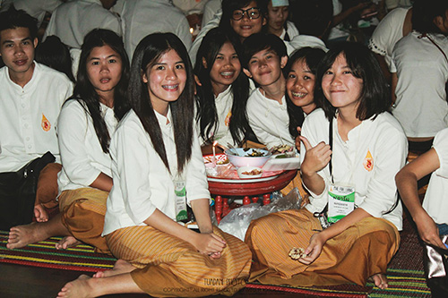

| CONTACT US 333 Moo.1,Thasud, Muang, Chiang-Rai 57100 Thailand +88-8565656 reviewmfu@gmail.com mrirw@thxs.com |
ใช้เพื่อการศึกษาเท่านั้น |
กิจกรรมพิธีบายศรีสู่ขวัญและงานเลี้ยงขันโตก
 เป็นกิจกรรมรับขวัญน้องใหม่แบบล้านนา เพื่อเป็นการต้อนรับนักศึกษาชั้นปีที่ 1 ที่เพิ่งมาเป็นสมาชิกใหม่ภายใต้รั้วแดงทองแห่งนี้ ด้วยคำขวัญของงานว่า “โคมแดงแสงทอง ปี้น้องลำดวน ปากั๋นชื่นม่วน สายใยมวลหมู่เฮา” ซึ่งเป็นขนบธรรมเนียมประเพณีดั้งเดิมแบบล้านนาในการให้เกียรติแก่แขกผู้มาเยือนหรือบุคคลสำคัญ นักศึกษาทุกคนที่มาร่วมงานบายศรีสู่ขวัญจะใส่ชุดผ้าฝ้ายทั้งชายหญิงอันเป็นเอกลักษณ์ของมหาวิทยาลัยแม่ฟ้า ซึ่งนักศึกษาชั้นปีที่ 1 จะได้ใส่ชุดพื้นเมืองนี้มามหาวิทยาลัยในทุกวันศุกร์หรือในกิจกรรมพิเศษด้านศิลปวัฒนธรรมต่างๆ เข้าสู่พิธีบายศรีสู่ขวัญและพิธีเรียกขวัญโดยตามความเชื่อของคนภาคเหนือที่จัดขึ้นเพื่อความเป็นสิริมงคลโดยเฉพาะในช่วงยามที่เริ่มต้นในสิ่งใหม่ๆ เช่นเดียวกับนักศึกษาใหม่ที่เพิ่งก้าวมาสู่รั้วมหาวิทยาลัย ทั้งนี้อธิการบดี ผู้บริหาร และคณาจารย์ได้ผูกข้อไม้ข้อมืออวยชัยให้พรแก่ดาวเดือนจากสำนักวิชาต่างๆ ที่เป็นตัวแทนนักศึกษาให้โชคดีมีชัยในการเข้ามาศึกษาเล่าเรียนในรั้วแดงทองแห่งนี้ นอกจากนี้ยังมีการแสดงนาฏศิลป์แบบล้านนาเชียงรายให้นักศึกษาที่มาจากทั่วทุกภูมิภาคได้รับชม บรรยากาศงานเลี้ยง
 ขันโตกที่ได้ชิมอาหารเหนือขึ้นชื่อ ทั้งน้ำพริกอ่อง น้ำพริกหนุ่ม แกงฮังเล ลาบคั่ว ล้วนทำให้นักศึกษาใหม่ได้สัมผัสสมนต์เสน่ห์เมืองเหนือ และร่วมสืบสานประเพณีวัฒนธรรมอันทรงคุณค่าของท้องถิ่นล้านนาเพื่อเป็นการต้อนรับและอวยชัยให้พร ให้ประสบความสำเร็จในทุกสิ่งทุกอย่างที่เข้ามาในชีวิต งานเลี้ยงขันโตกเป็นการเฉลิมฉลองในการต้อนรับที่เข้ามาสู่มหาวิทยาลัยแม่ฟ้าหลวง ด้วยความชื่นชมยินดีและเต็มใจต้อนรับนักศึกษาใหม่ทุกคนมาเป็นครอบครัวเดียวกัน
| CONTACT US 333 Moo.1,Thasud, Muang, Chiang-Rai 57100 Thailand +88-8565656 reviewmfu@gmail.com mrirw@thxs.com |
ใช้เพื่อการศึกษาเท่านั้น |